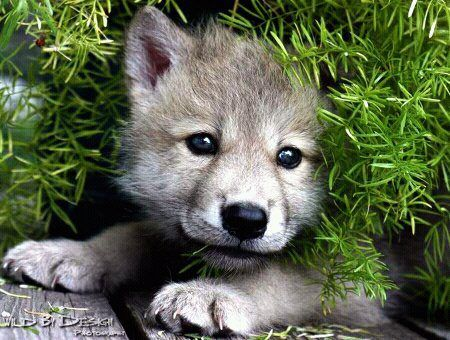

Gray Wolf
Wolves are legendary because of their spine-tingling howl, which they use to communicate.
- Scientific Name: Canis lupus
- Diet: Carnivore
- Average life span in the wild: 6 to 8 years
- Weight: 40 to 175 lbs
The gray wolf is native to the areas of North America and Eurasia wilderness. It is the largest of the wolf family and is identified by being bigger and having less angular or pointed features from its cousins. During the winter season the gray wolf gets a particularly long and full coat mostly gray in color befitting the name. Other colors do occur but it is not generally known for them. This wolf breed is one of the best known and researched animals worldwide.